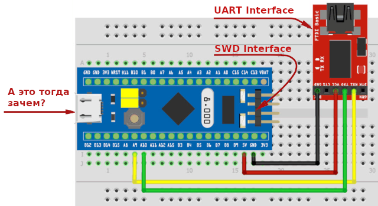

На Blue Pill есть Micro USB разъем. Для чего он нужен? Можно ли через него прошивать Blue Pill?
В абсолютно новой BluePill через разъем Micro USB можно только подавать питание. Прошивание чистого микроконтроллера возможно только такими способами:

Однако, если через SWD-интерфейс или через UART-интерфейс через залить в STM32 специальный бутлоадер, то появляется возможность в дальнейшем заливать прошивку через Micro-USB разъем с помощью обычного USB-кабеля. Такой тип соединения называется DFU-интерфейсом.